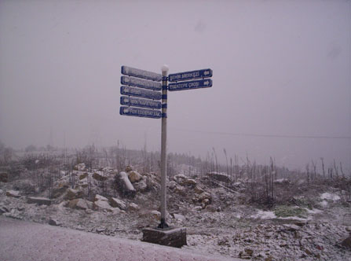

Url nedir?
Posted on Mon 10 October 2016 in Web Application Security • 2 min read
Gördüğünüz tabelalardan kaçını okuyorsunuz...
Genel olarak yorumlarsak yani teknolojiyi bir kenara bırakalım, araç kullanan insanlar nereye gittiklerini tabelalardan anlayabilirler.
Sembollerinden ve renklerinden bir çok farklı anlamlar ortaya çıkabiliyor. Url dediğimde aklıma tam olarak bu geliyor.

Interneti tek bir bilgisayar gibi düşünürsek, URL bu bilgisayardaki dosyalara eriştiğimiz pathlerdir, internetteki bir kaynağa erişmemizi sağlayan yapılardır.
URL Yapısı
Absolute(Tam) bir Url yapısı RFC 3986'da böyle belirtilmiş. Araştırdığım bütün kaynaklarda böyle bir sonuçla karşılaştım. Belli bir standart belirlenmiş.
Aşağıdaki tabloda tam url yapısının parçalarını görebilirsiniz.
| scheme: | // | login.password@ | address | :port | /path/to/resource | ?query_string | #fragment |
|---|---|---|---|---|---|---|---|
| 1 | 2 | 3 | 4 | 5 | 6 | 7 | 8 |
- Şema/Protokol adı (http, https gibi)
- Sabit url yapısı göstergesi
- Kaynağa erişebilmek için kullanılabilecek credentials yeri (opsiyonel)
- Data'nın geleceği server
- Bağlanılacak port numarası (opsiyonel)
- kaynağı gösteren hiyerarşik unix path'i
- Query string parametreleri (opsiyonel)
- Fragment identifiers (opsiyonel) 3.ve 5. alanlar dahil olmak üzere tümüne bir url'in "Authority" kısmı denir.
Tüm bunlar birleştiğinde elimizde belli karakterler barındıran bir string kalıyor. Peki Bir url parser oluşturmak istersek hangi adımları izlememiz gerekebilir?
-
Şema adını görebilmek için ilk ":" karakterine kadar ilerleriz. Şimdi solumuzda kalan kısım şema/protokol stringi olmalı. Eğer beklenmeyen bir string yapısıyla karşılaşırsak bunu reddedip yolumuza devam ederiz.(tam olmayan relative pathlerde olabileceği gibi)
-
Şema adının hemen ardından "//" gelmeli. eğer varsa tamam. Değilse almıyoruz.
-
Authority kısmını komple almamız gerek. Bu sebeple port kısmının sonuna kadar bakıyoruz. Yani önümüze eğer "/", "\", "?", "#" gibi karakterler gelirse durmamız ve solumuzda kalan stringi extract etmemiz gerekecek. Windows işletim sisteminde filepathler "\" ile yazılır bu sebeple browserlar slash ve backslashi birlikte destekler.
-
Eğer varsa credential bulmamız gerekecek. Biraz önce söktüğümüz string içerisinde "@" karakterine göre split işlemi gerçekleştiriyoruz. İlk kolon login-password içeriği olacaktır.
-
Ve ardından varış adresini yani 4. alanı extract etmemiz gerekiyor. Elimizde kalan substringde şimdi sadece adres ve port kalmış olmalı ":" karakterine göre split ettiğimizde ilk kısım adresi verecektir. IPv6 adreslerde farklı bir işlem yapmamız gerekebilir
-
Eğer varsa Path'i almamız lazım. Authority kısmının hemen ardından "/" veya "\" gelebildiğini biliyoruz. O zaman bir sonraki bakmamız gereken "?","#" gibi karakterler olabilir. Hangisi önce gelirse. Kalan stringin sonuna kadar bakılmalı. Eğer varış noktasına ulaşıldıysa, bu substring path'i içerir.
-
Query stringini extract etmeye başladıysak bir önceki maddede "?" karakterine gelmiş olmalıyız. Bir sonraki "#" karakterine kadar gittiğimizde ise arada kalan string bize query stringi verir
-
Eğer sonunda "#" karakterine vardıysanız bundan sonra sona kadar ilerlenen kısım fragment identifier olarak parse edilir.
Bu örneği The Tangled Web kitabından bloguma yazıyorum. Başta karışık gibi görünsede bu tarz bir kompleksliği anlamaya çalıştığım zaman web teknolojilerinin köşe taşlarından biri olan url yapısına daha detaylı bir açıyla bakmaya başladığımı hissettim. Kitapta ilerlediğim ve beğendiğim kısımları blogumda yer vermeye devam edeceğim.
Reference